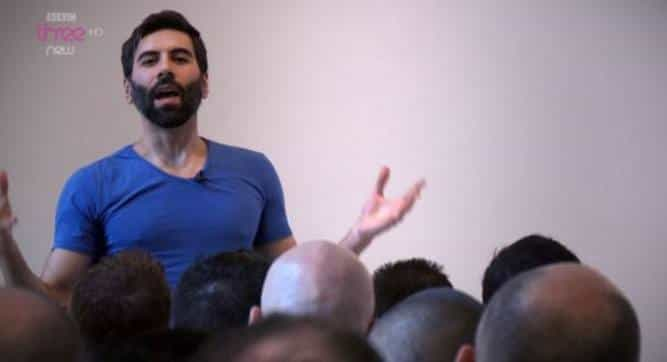

< < < Back
3 Things That Give Hope To Men In The West – Return Of Kings
These are dark times, gentlemen. No, this is not an exaggeration; it is not hyperbole, nor is it dramatic. The entire fate of the West hangs by a thread: as the liberal machine grows larger and larger, its power seems unending. But—alas, there is hope.
More and more men are starting to wake up. Men in positions of power, such as judges, doctors, lawyers, and police officers, are beginning to notice the unsettling commonness of false rape accusations. Men in positions of guidance, such as teachers, mentors, and coaches, are beginning to see the value in teaching young boys how to be men.
And, more importantly, a large and growing community of men is emerging; this is not a group with a leader, but rather a group united by ideology. Gentlemen, we are that group.
I propose that it is important to point out the folly of the West, and to shed light on the widespread corruption of politicians, however I also propose that it is equally important to maintain our morale. With this in mind, here are three things that I believe will give us hope.
1. More And More Women Jailed For False Rape Accusations
Just five years ago, jailing a woman for a false rape accusation would have been nearly unheard of. The beta males would scream and shout, proclaiming that all women are innocent little angels, and that all men are sexist, hateful pigs. The feminazis would be on a rampage, demanding that the men accused be thrown in jail.
Now, however, the tide is beginning to turn. More and more women are being jailed for falsely accusing innocent men of rape. Take this woman, for example. She falsely accused two soldiers—soldiers!—of trying to rape her, when really she was ashamed about cheating on her boyfriend in a drunken, cocaine-fueled threesome.
Or maybe this woman from Northern Island, who was sent to jail for nine months after pleading guilty to falsely accusing a man of rape. Or maybe this woman, who was jailed after her 11th false rape accusation in a decade. A fucking decade! And need I mention the UVA rape hoax?
There’s a small, but growing list of women that have been jailed for falsely accusing men of rape over the past several years…and I know what you may be thinking. “9 months? 16 months? Are you kidding me, Jon? That’s nothing! The UVA girl wasn’t even jailed!”
And do you know what? You’re right. They should be jailed for much longer, and Jackie should be thrown in jail indefinitely. However you must realize that change does not happen overnight. We are not going to go from being a completely castrated, beta-male-encouraging society to viciously condemning false rape accusations. It just isn’t going to happen.
Change takes time. Did African American men get rights all at once? Of course, not. It was a slow, steady march. First it was the right to be free. Then it was separate, but equal. Then, the Harlem Resistance, education, the right to vote, and finally, increasingly equal economic opportunity.
Justice does not happen overnight, my friends. It takes time. And despite these disturbingly short prison sentences, we are slowly changing the hearts and minds of those in our culture. As more and more women are exposed for the liars that they are, more and more men will start to take note.
Suddenly, the idea that all women are delicate little flowers will start to erode. Yes, some loser beta males will still remain, but more and more men will start to awaken and shrug off their shackles of ignorance. More and more men will begin to weaken the social narrative currently in existence, and will help to usher in a new age of patriarchal justice.
2. The Rise Of The Alt-Media
Mike Cernovich, a member of the Alt-Media, on a major TV Network.
I would argue that from the end of WWII up until around 2013, we were actually in a period of time that historians will look back at and compare to the pre-printing press era. Do you know why?
Well, who controlled the flow of information before the printing press? The state. All of the information that the peasants knew was fed to them by priests, politicians, and the elite. There was no other option.
Likewise, who controlled the flow of information from the 1940’s up to around 2013? The networks. The politicians. The elite. They used a different medium, but the principle is the same: the flow of information was controlled by a small group of people bent on brainwashing the masses.
This is all starting to change. With the Alternative Media rising in the last several years, the mainstream narrative is beginning to crumble; and the elites could feel it. They were worried. That’s why they tried to pass SOPA and PIPA in 2013, which would have effectively allowed a government agency to selectively shut down websites and order payment processors to stop funding them.
But, unfortunately for the elites, the people are too strong—flooded by literally millions of campaigners, crying for war if the internet were to be censored, the government was forced to trash the bills. This was the beginning of the rise of the Alternative Media.
Since then, their numbers have grown exponentially. Guys like Milo Yiannopoulos, Mike Cernovich, and our very own Roosh, are slowly erecting massive News Networks in the face of the elites. And they can do nothing to stop it.
As the older, brainwashed generation begins to die off, the younger, more aware generations will begin to take up its yoke. As millions of baby boomers slowly hit the grave, the major news networks such as MSNBC, CNN, and Fox, will start to do the same. Without millions of old-timers still regularly tuning in for their daily brainwashing session, the major news networks will collapse.
In its place, will rise a great and powerful thing: the Alternative Media. No longer will information be controlled by a handful of powerful elites. No longer will we be so cruelly lied to, as they profit off of our misery. And no longer will we be made prisoners of our own mind.
3. The Growing Manosphere

Roosh speaking during his “State of Man” tour.
Although one could categorize the manosphere under “Alt-Media,” I would actually disagree. The goal of the Alt-Media is to give truthful reporting on political, economic, and social issues. The goal of the manosphere is to arm men with the tools that they need to face the challenges of work, women, and life. The manosphere is what spawned the Alt-Media. A growing pool of men who see reality for what it is, demand news stations that tell the truth.
The manosphere has shown us that there is, in fact, an ideal way to live. No, not all ways of living are equal. Some ways of living will lead to greater pleasure and fulfillment than others. Cultivating certain skills, such as learning how to invest properly, or how to be a truly attractive man, will indefinitely lead to a better life.
All over the world, a growing number of men are taking their lives into their own hands. They’re learning how to sculpt the body of their dreams, how to effectively talk to gorgeous women without shaking at the knees, and how to accomplish their goals and manage their lives.
But, what’s more, is that they’re starting to wake up. They’re starting to cultivate a passion for living, they’re starting to reclaim the humanity that the system crushed out of them long, long ago. They’re starting to become men.
We are all a part of this community; whether this is the first article on ROK that you’ve read, or you’ve been reading since the start, we welcome you. We are a growing group of men who are dedicated to helping one another attain the highest of heights, the greatest of goals, and the deepest fulfillment.
Despite the massive amount of external resistance that the manosphere has faced, here we are. Thousands of feminists trying to shame us and warp our opinions, thousands of beta-males clamoring to throw Roosh and other pickup artists (cough: Julien Blanc) in jail, and the social pressure of an entire cultural narrative telling us that we’re wrong….and yet, here we stand.
We have set the truth free, and it cannot be contained. The manosphere cannot be crushed, it cannot be beaten, it cannot be bullied, and it cannot be destroyed. There is no negotiation; we are here to stay.
 If you like this article and are concerned about the future of the Western world, check out Roosh's book Free Speech Isn't Free. It gives an inside look to how the globalist establishment is attempting to marginalize masculine men with a leftist agenda that promotes censorship, feminism, and sterility. It also shares key knowledge and tools that you can use to defend yourself against social justice attacks. Click here to learn more about the book. Your support will help maintain our operation.
If you like this article and are concerned about the future of the Western world, check out Roosh's book Free Speech Isn't Free. It gives an inside look to how the globalist establishment is attempting to marginalize masculine men with a leftist agenda that promotes censorship, feminism, and sterility. It also shares key knowledge and tools that you can use to defend yourself against social justice attacks. Click here to learn more about the book. Your support will help maintain our operation.
Read More: Yes, There Is Hope… But You Must Really Want To Succeed